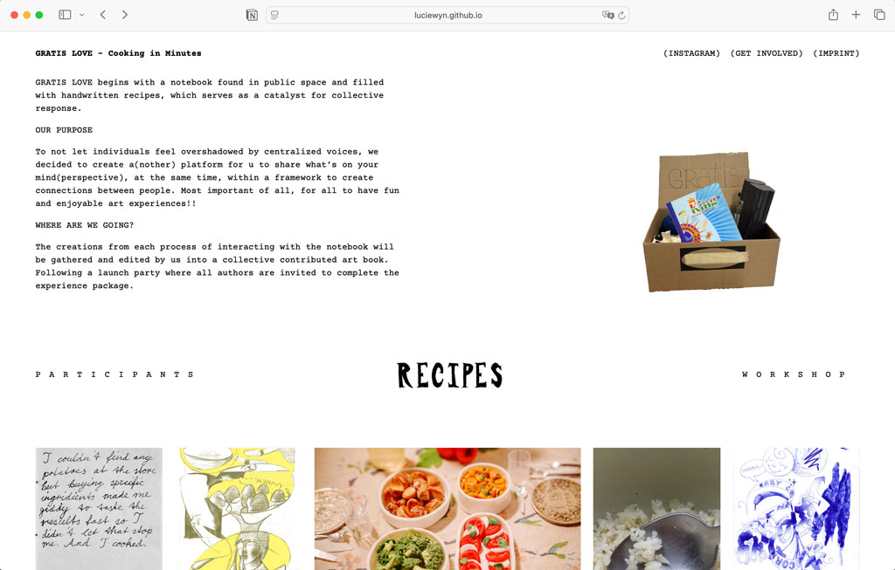
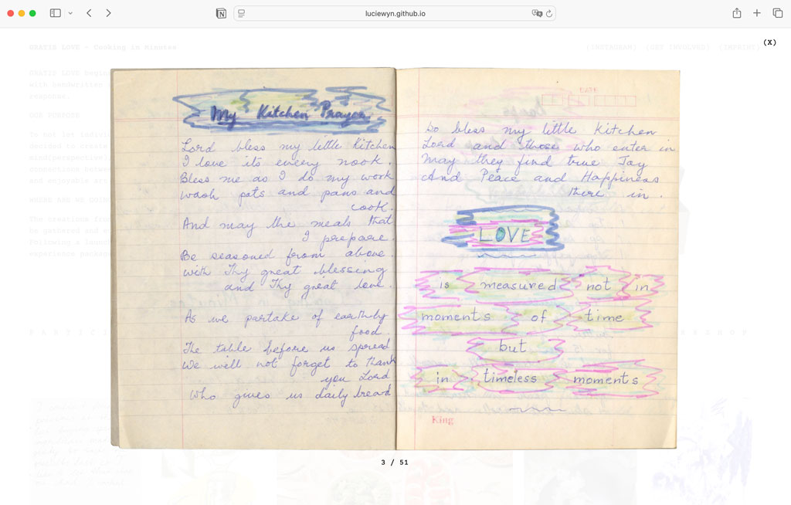
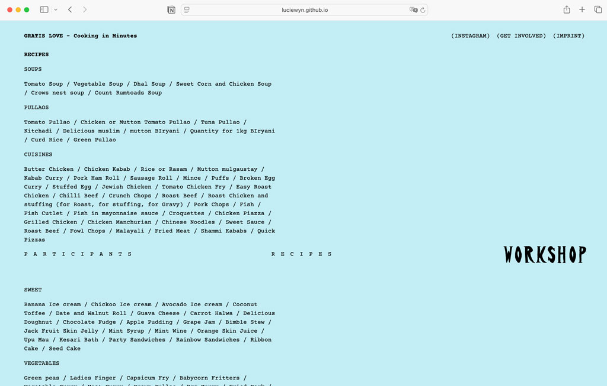
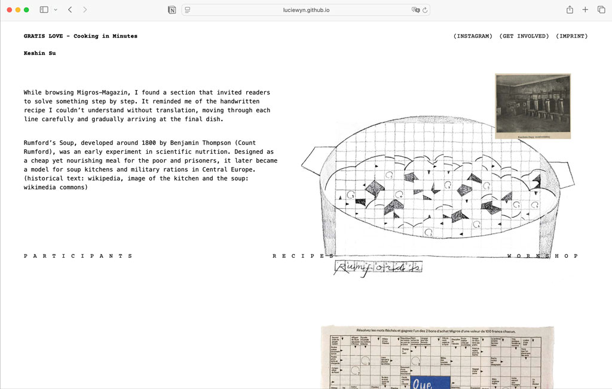

INFO
GRATIS LOVE is a collaborative art initiative sparked by the discovery of a handwritten recipe notebook in a public space, serving as a catalyst for community dialogue. Our purpose is to decentralize the creative narrative, providing a platform where individual perspectives can shine through a framework of genuine human connection and joyful artistic play.
Every contribution gathered during this process is curated into a collective art book, culminating in a launch party that brings all authors together to celebrate the completed experience.
CREDITS
Project Initiators: Lucie Lin & Hsiao-Yen Yao
Participants: Arbesa Musa / Allie Pori / Alice Tioli / Axel / Brenda Dell'Anna / Chesa Cuan / Deniz çalışkann / Emily Randlkofer / Estéfana Román Matesanz / Hidomi / Jasmine Javet / Jessica / Jiawen Mei / Léna Lacrabère / Linus Finn / Linus Weber / Lyna & Alessandro / Nana Ehrsam / Rosie Lin / Shipping Shen (SONO) / Tim Kummer / Tzuchi Su / Valeria Leiva / Yuh-Chyi Liou



